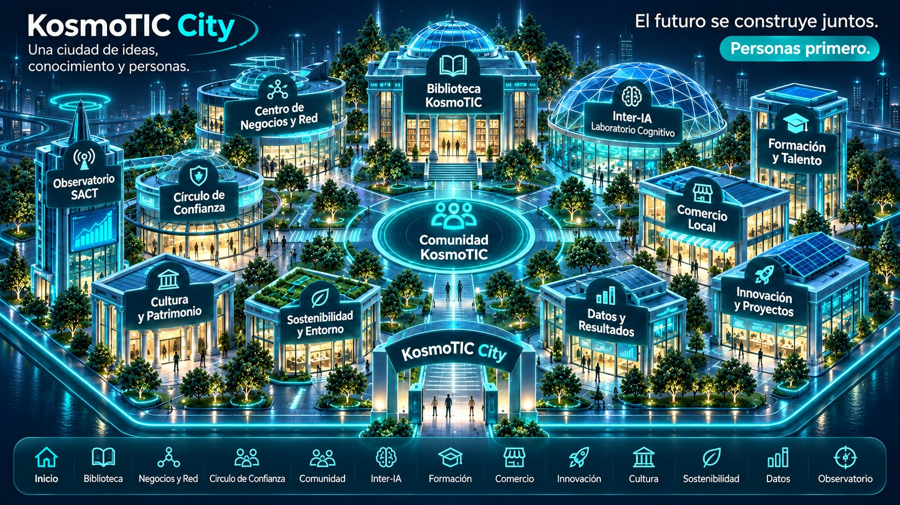

Una ciudad de ideas, conocimiento y personas.
Explora los espacios de KosmoTIC City. La ciudad está en evolución.

Explora la ciudad
Los edificios y este listado conducen al mismo contenido. Los espacios se muestran en preparación hasta su validación.
Espacio de KosmoTIC City
En preparación · Información pendiente de validar
Ver todos los espacios